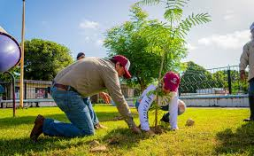
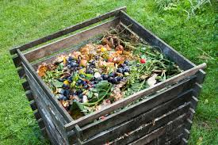
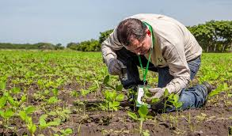

recycling ¿Qué son las 3R’s?
Las 3R’s (Reducir, Reutilizar y Reciclar) son una estrategia ambiental que busca disminuir el impacto negativo que generamos en el planeta mediante tres acciones clave:
- Reducir: Disminuir la cantidad de basura que producimos diariamente.
- Reutilizar: Dar un nuevo uso a los objetos que todavía pueden servir antes de desecharlos.
- Reciclar: Transformar los materiales en nuevos productos.

play_circle Ver video
park Promover áreas verdes
Las áreas verdes son espacios con vegetación que ayudan a mejorar la salud ambiental y social. Promoverlas implica acciones como:
- Plantar árboles en escuelas, colonias o parques.
- Mantener limpias las zonas con plantas y pasto.
- Crear pequeños jardines comunitarios.
- Colocar plantas en patios, entradas y azoteas.
- Participar en campañas de reforestación.

Beneficios: reducen la contaminación del aire, bajan la temperatura, mejoran la salud física y mental, y favorecen la biodiversidad.
eco ¿Cómo hacer tu composta?
La composta es un abono natural hecho a partir de desechos orgánicos. Hacerla en casa es fácil:
- Prepara un contenedor: caja de madera, cubeta o espacio en tu jardín.
- Agrega materiales verdes: restos húmedos como cáscaras de frutas, verduras, café, cáscaras de huevo molidas.
- Agrega materiales secos: hojas secas, papel troceado, cartón, ramitas.
- Mantén la mezcla aireada: remueve con una pala cada 3–4 días.
- Humedad adecuada: debe sentirse como una esponja húmeda. Ajusta agregando material seco o húmedo según sea necesario.

Tiempo de descomposición: entre 1 y 3 meses. La composta estará lista cuando tenga olor a tierra mojada y textura suave.
play_circle Ver video
school Capacitación de sembrado
Consiste en enseñar técnicas básicas para sembrar y cuidar plantas. Puede aplicarse en escuelas, comunidades o incluso en casa.
- Identificación de suelos (arenoso, arcilloso, mixto).
- Cómo preparar la tierra y utilizar composta.
- Tipos de semillas y épocas de siembra.
- Cómo regar sin desperdiciar agua.
- Construcción de huertos urbanos.
- Control natural de plagas, trasplante y cuidados.

La capacitación promueve la autosuficiencia, fomenta la educación ambiental, mejora el uso del agua
y crea comunidades más verdes y conscientes.
play_circle Ver video